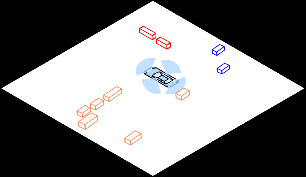
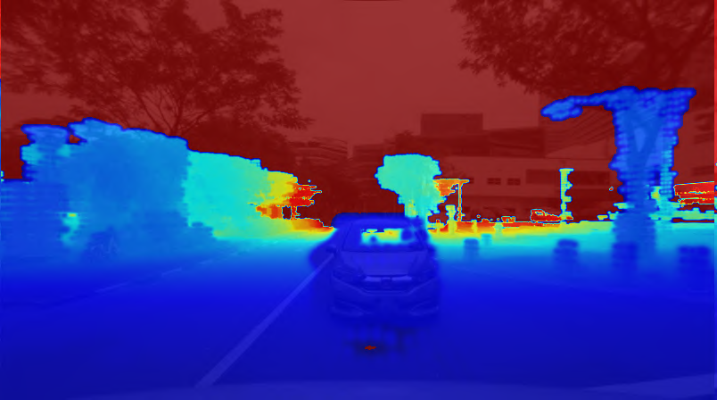
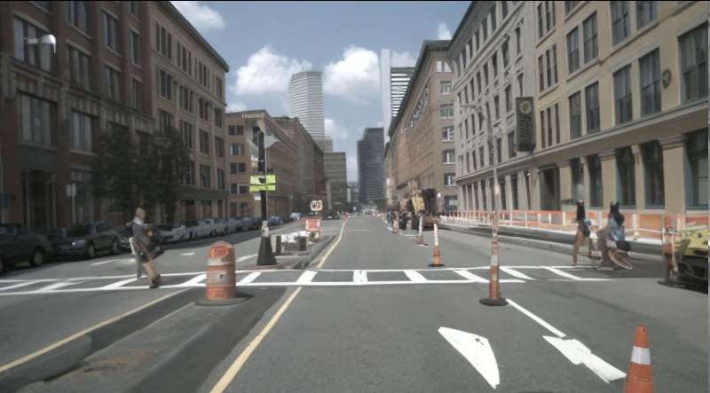
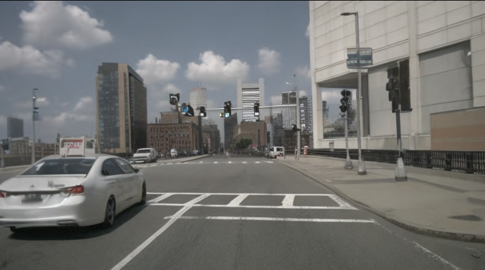
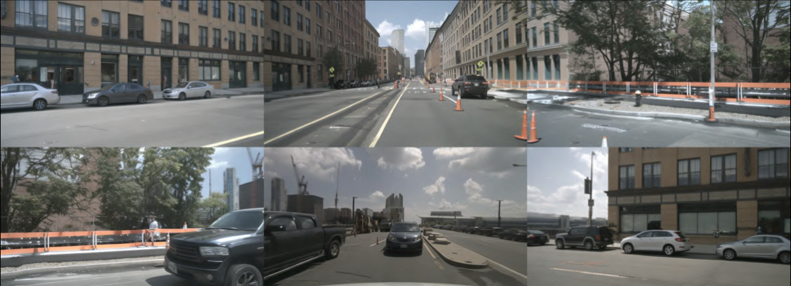

X-Scene
简单摘要
扩散模型通过实现真实的数据合成、预测性端到端规划和闭环仿真来推进自动驾驶，主要关注时间一致的生成。然而，需要空间相干性的大规模 3D 场景生成仍未得到充分探索。在本文中，我们提出了一种用于大规模驾驶场景生成的新颖框架，该框架实现了几何复杂性、外观保真度和灵活的可控性。具体来说，支持多粒度控制，包括由用户输入或文本驱动的低级布局调节以实现详细的场景组合，以及由用户意图通知的高级语义指导和用于高效定制的LLM丰富提示。
为了增强几何和视觉保真度，我们引入了一个统一的管道，可以顺序生成 3D 语义占用和相应的多视图图像和视频，确保跨模态的对齐和时间一致性。我们通过一致性感知外画进一步将局部区域扩展到大规模场景，这可以从先前生成的区域推断占用率和图像，以保持空间和视觉的连贯性。生成的场景被提升为高质量的 3DGS 表示，支持模拟和场景探索等多种应用。大量实验表明，该技术可大幅提高大规模场景生成的可控性和保真度，从而为自动驾驶提供数据生成和仿真能力。


简而言之，这篇论文关注的核心是：扩散模型通过实现真实的数据合成、预测性端到端规划和闭环仿真来推进自动驾驶，主要关注时间一致的生成。然而，需要空间相干性的大规模 3D 场景生成仍未得到充分探索。在本文中，我们提出了一种用于大规模驾驶场景生成的新颖框架，该框架实现了几何复杂性、外观保真度和灵活的可控性。具体来说，支持多粒度控制，包括…
生成式人工智能的最新进展对自动驾驶产生了深远的影响，扩散模型（DM）逐渐成为数据合成和驾驶模拟的关键工具。一些方法利用 DM 作为数据机器，生成高保真驾驶视频或多模态合成数据来增强感知任务，并生成极端情况（例如车辆切入）以丰富不常见但关键场景的规划数据。除此之外，其他方法还使用 DM 作为世界模型来预测未来的驾驶状态，从而实现端到端规划和闭环仿真。所有这些努力都强调通过时间递归生成长期视频，鼓励 DM 为下游任务生成连贯的视频序列。
然而，具有空间扩展的大规模场景生成，旨在为任意驾驶模拟构建广阔且身临其境的3D环境，仍然是一个新兴但尚未充分探索的方向。一些开创性的作品探索了大规模 3D 驾驶场景生成。例如，SemCity 使用 DM 生成城市规模的 3D 占用网格，但缺乏外观细节限制了其真实模拟的实用性。 UniScene 和 InfiniCube 通过生成 3D 占用和图像来扩展此功能，但需要手动定义的大规模布局作为调节输入，从而使生成过程复杂化并阻碍灵活性。
在这项工作中，我们解决了具有空间扩展的大规模场景生成问题，这提出了三个关键挑战：1）灵活的可控性：通过低级条件（例如布局）实现精确的场景组合和高级提示（例如用户意图文本描述）实现直观定制的通用控制； 2) 高保真几何和外观：生成具有逼真外观的复杂几何形状，以确保 3D 场景中的结构完整性和视觉真实感； 3）大规模一致性：保持扩展区域的空间一致性，以确保整个生成环境的全局一致性。为了应对这些挑战，我们提出了一种用于大规模驾驶场景生成的新颖框架，其特点是：1）多粒度可控性：它使用户能够在多个抽象级别指导生成，支持细粒度的 BEV 语义布局以实现精确控制和高级文本提示以实现高效定制。
法学硕士将文本提示丰富为详细的场景叙述，以场景图的形式构建，并通过场景图布局扩散模块转换为矢量图布局。论文…
核心创新
综合引言与方法部分，这篇论文的核心创新可以概括为以下几方面：
1）问题定义与研究动机
生成式人工智能的最新进展对自动驾驶产生了深远的影响，扩散模型（DM）逐渐成为数据合成和驾驶模拟的关键工具。一些方法利用 DM 作为数据机器，生成高保真驾驶视频或多模态合成数据来增强感知任务，并生成极端情况（例如车辆切入）以丰富不常见但关键场景的规划数据。除此之外，其他方法还使用 DM 作为世界模型来预测未来的驾驶状态，从而实现端到端规划和闭环仿真。所有这些努力都强调通过时间递归生成长期视频，鼓励 DM 为下游任务生成连贯的视频序列。然而，具有空间扩展的大规模场景生成，旨在为任意驾驶模拟构建广阔且身临其境的3D环境，仍然是一个新兴但尚未充分探索的方向。一些开创性的作品探索了大规模 3D 驾驶场景生成。例如，SemCity 使用 DM 生成城市规模的 3D 占用网格，但缺乏外观细节限制了其真实模拟的实用性。 UniScene 和 InfiniCube 通过生成 3D 占用和图像来扩展此功能，但需要手动定义的大规模布局作为调节输入，从而使生成过程复杂化并阻碍灵活性。在这项工作中，我们解决了具有空间扩展的大规模场景生成问题，这提出了三个关键挑战：1）灵活的可控性：通过低级条件（例如布局）实现…
2）方法框架与核心模块
旨在在统一框架内生成大规模 3D 驾驶场景，解决可控性、保真度和可扩展性问题。如图所示，它由三个主要组成部分组成：1）多粒度可控性（Sec.），它将高级用户意图与低级几何约束集成在一起，以实现灵活的场景规范； 2) 联合占用、图像和视频生成（第 1 节），它采用条件扩散模型在 3D 感知指导下合成 3D 体素占用、多视图图像和时间相干视频； 3）大规模场景外推和重建（第二节），它通过一致性感知的外画扩展场景，并将其提升为 3DGS 表示形式，以供下游模拟和探索。多粒度可控性通过以下方式支持双模式场景控制：1）高级文本提示，由LLM丰富并通过文本到布局生成模型转换为结构化布局（如图所示）； 2）直接低级几何控制以实现精确的空间规范。这种混合方法既可以实现直观的创意表达，又可以实现严格的场景定制。文本描述丰富。给定用户提供的粗略文本提示，我们首先将其丰富为全面的场景描述，包括：场景风格（天气、光照、环境）、前景对象（语义、空间属性和外观）、背景元素（语义和视觉特征）和文本场景图布局，表示场景实体之间的空间关系。结构化描述生成为： 其中表示场景描述存储器。每个实体都是使用收集的场景数据集之…
3）实验设计与工程价值
实验设置我们使用 Occ3D-nuScenes 来训练占用模块，并使用 nuScenes 来训练多视图图像和视频生成模块。附录中提供了其他实施细节。实验任务和指标。我们使用一系列指标从三个方面进行评估：1）占用生成：我们使用 IoU 和 mIoU 指标评估 VAE 的重建结果。对于占用率生成，我们报告了生成的 3D 和 2D 指标，包括初始分数、FID、KID、精度、召回率和 F 分数。 2）多视图图像生成：我们使用 FID 评估合成图像的质量。 3）多视图视频生成：我们使用 FVD 评估视频时间一致性。 4) 下游任务：我们通过测量下游任务生成的场景的性能来评估模拟与真实的差距，包括语义占用预测（IoU、mIoU）、3D 对象检测（mAP、NDS）、BEV 分割（mIoU）以及 UniAD 的端到端规划（轨迹 L2 误差和碰撞率）。大规模场景生成的定性结果。图的上半部分展示了大规模场景…
技术细节
下面按照论文的方法章节结构展开，重点说明模型的关键模块、公式设计和训练策略。
旨在在统一框架内生成大规模 3D 驾驶场景，解决可控性、保真度和可扩展性问题。如图所示，它由三个主要组成部分组成：1）多粒度可控性（Sec.），它将高级用户意图与低级几何约束集成在一起，以实现灵活的场景规范； 2) 联合占用、图像和视频生成（第 1 节），它采用条件扩散模型在 3D 感知指导下合成 3D 体素占用、多视图图像和时间相干视频； 3）大规模场景外推和重建（第二节），它通过一致性感知的外画扩展场景，并将其提升为 3DGS 表示形式，以供下游模拟和探索。多粒度可控性通过以下方式支持双模式场景控制：1）高级文本提示，由LLM丰富并通过文本到布局生成模型转换为结构化布局（如图所示）； 2）直接低级几何控制以实现精确的空间规范。这种混合方法既可以实现直观的创意表达，又可以实现严格的场景定制。文本描述丰富。给定用户提供的粗略文本提示，我们首先将其丰富为全面的场景描述，包括：场景风格（天气、光照、环境）、前景对象（语义、空间属性和外观）、背景元素（语义和视觉特征）和文本场景图布局，表示场景实体之间的空间关系。结构化描述生成为： 其中表示场景描述存储器。每个实体都是使用收集的场景数据集之一自动构建的：1）使用场景图像上的 VLM 进行提取； 2）将空间注释（对象框和道路车道）转换为文本场景图布局。如图所示，检索增强生成（RAG）模块检索类似于从记忆库中检索的相关描述，然后由基于LLM的生成器将其组合成详细的、用户期望的场景描述。该管道在处理简短的用户提示时利用 RAG 进行少量镜头检索和合成，从而实现灵活且上下文感知的场景合成。内存库设计为可扩展的，允许无缝集成新数据集以支持更广泛的场景样式。附录中提供了生成的场景描述的其他示例。文本场景图到布局生成。
给定文本布局，我们遵循先前的工作，并通过场景图到布局管道将其转换为空间布局图（图）。首先，我们构建一个场景图，其中节点表示场景实体（例如，汽车、行人、道路车道），边表示空间关系（例如，前面、顶部）。然后通过将语义特征（通过文本编码器提取）与可学习的几何特征连接来嵌入每个节点和边，从而产生节点嵌入和边嵌入。图嵌入使用图卷积网络进行细化，该网络在整个图上传播上下文信息并更新每个节点……
$$ \mathcal{D} = \mathcal{G}_\text{description}\big(\mathcal{T}_\mathcal{P}, \mathrm{RAG}(\mathcal{T}_\mathcal{P}, \mathcal{M})\big) $$
公式：\mathcal{D} = \mathcal{G}_\text{描述}\big(\mathcal{T}_\mathcal{P}, \mathrm{RAG}(\mathcal{T}_\mathcal{P}, \mathcal{M})\big) 上：, B, L\ S O B L D 生成为： 其中表示场景描述内存。每个实体都是使用收集的场景数据集之一自动构建的：1）使用场景图像上的 VLM 进行提取； 2）将空间注释（对象框和道路车道）转换为文本场景图布局。如图所示...
$$ \mathbf{F}_\mathbf{q}(x, y, z) = \sum_{\mathcal{P} \in \{xy, xz, yz\}} \sum_{k=1}^K \sigma\big(\mathbf{W}_\omega^\mathcal{P} \cdot \text{PE}(x, y, z)\big)_k \cdot \mathbf{h}^\mathcal{P}\Big( \text{proj}_\mathcal{P}(x, y, z) + \Delta p_k^\mathcal{P} \Big) $$
公式：\mathbf{F}_\mathbf{q}(x, y, z) = \sum_{\mathcal{P} \in \{xy, xz, yz\}} \sum_{k=1}^K \sigma\big(\mathbf{W}_\omega^\mathcal{P} \cdot \text{PE}(x, y, z)\big)_k \cdot \mathbf{h}^\mathcal{P}\Big( \text{proj}_\mathcal{P}(x, y, z) + \Delta p_k^\mathcal{P} \大） 上：thbfo R^X Y Z h = \h^xy, h^xz, h^yz\ q = (x, y, z) as: -1mm 其中 是采样点数，表示位置编码，用softmax函数生成注意力权重。投影函数将 3D 坐标映射到 2D 平面（例如 ），以及可学习的偏移量
$$ \mathbf{h}^{\text{new}}_{t-1} \gets \left( \sqrt{\bar{\alpha}_t}\mathbf{h}^{\text{ref}}_0 + \sqrt{1 - \bar{\alpha}_t} \boldsymbol{\epsilon} \right) \odot \mathbf{M} + \epsilon_{\theta}^{\textit{occ}}(\mathbf{h}^{\text{new}}_t, t) \odot (1 - \mathbf{M}) $$
公式：\mathbf{h}^{\text{new}}_{t-1} \gets \left( \sqrt{\bar{\alpha}_t}\mathbf{h}^{\text{ref}}_0 + \sqrt{1 - \bar{\alpha}_t} \boldsymbol{\epsilon} \right) \odot \mathbf{M} + \epsilon_{\theta}^{\textit{occ}}(\mathbf{h}^{\text{new}}_t, t) \odot (1 - \mathbf{M}) 上下：将任务分解为外推三个正交的2D平面，如图所示。其核心思想是通过将去噪过程与由重叠掩模引导的已知参考平面的前向扩散同步来生成新的潜在平面。具体来说，在每个去噪步骤中，新的潜在变量是……



把全文方法串起来看，这篇论文的逻辑基本都遵循同一条主线：先把输入组织成更容易处理的表示，再通过模型结构和损失函数把这个表示推向目标输出，最后用可视化与数值实验共同证明该设计有效。
实验结论
实验部分主要回答两个问题：第一，方法是否真的优于已有基线；第二，这种优势来自哪一个设计决策。
实验设置我们使用 Occ3D-nuScenes 来训练占用模块，并使用 nuScenes 来训练多视图图像和视频生成模块。附录中提供了其他实施细节。实验任务和指标。我们使用一系列指标从三个方面进行评估：1）占用生成：我们使用 IoU 和 mIoU 指标评估 VAE 的重建结果。对于占用率生成，我们报告了生成的 3D 和 2D 指标，包括初始分数、FID、KID、精度、召回率和 F 分数。 2）多视图图像生成：我们使用 FID 评估合成图像的质量。 3）多视图视频生成：我们使用 FVD 评估视频时间一致性。 4) 下游任务：我们通过测量下游任务生成的场景的性能来评估模拟与真实的差距，包括语义占用预测（IoU、mIoU）、3D 对象检测（mAP、NDS）、BEV 分割（mIoU）以及 UniAD 的端到端规划（轨迹 L2 误差和碰撞率）。大规模场景生成的定性结果。图的上半部分展示了大规模场景生成结果。通过迭代应用一致性感知外绘，有效地将局部区域扩展为连贯的大规模驾驶场景。生成的场景可以进一步重建为 3D 表示，从而实现视图渲染并支持下游感知任务。除了静态环境之外，我们的管道还生成时间连贯的多视图视频（有关定性和定量结果，请参阅第 2 节和图 1）。用户提示的生成和编辑。图的下半部分展示了交互式场景生成的灵活性，支持用户提示生成和几何编辑。用户可以提供高级提示（例如“创建繁忙路口”），这些提示经过处理后会生成相应的布局和场景内容。此外，给定现有场景，用户可以指定编辑意图（例如，“移走停放的汽车”）或调整低级几何属性。 Our pipeline updates the scene graph accordingly and regenerates the scene through conditional diffusion.主要结果比较占用重建和生成。表列出了占用重建结果的比较。结果表明，该方法实现了卓越的重建性能，在类似的压缩设置下显着优于先前的方法（例如，与 UniScene 相比，+0.8% mIoU 和 +2.5% IoU）。
这一改进归因于我们的三平面表示在保持编码效率的同时保留几何细节的能力增强。表格显示了 3D 占用生成的定量结果。遵循 中的协议，我们在...下报告性能

- 方法在核心指标上的优势与结构设计和训练目标直接相关；
- 消融实验表明，拿掉关键模块后性能与结果质量都有明显回落；
- 论文不仅比较数值，也关注可视化质量、稳定性和泛化能力等更贴近真实使用的信号。
理解评价
在本文中，我们提出了一种新颖的 3D 驾驶场景生成框架，该框架实现了高保真度、灵活的可控性以及大规模时空一致性。利用多粒度控制机制，可以直观而精确地指定高级语义指导和低级几何细节。其统一的体素-图像-视频生成管道可捕获详细的 3D 几何形状、逼真的外观和时间连贯的动态，而一致性感知的外画可在广阔的环境中保持空间连贯性。大量实验表明，它在生成质量、可控性和可扩展性方面优于现有方法，使其成为大规模数据生成、驾驶模拟和交互式场景探索的多功能工具。
未来的工作将探索更长的时间范围和多智能体交互，以进一步增强生成的驾驶场景的真实性和活力。在本节中，我们讨论我们工作的潜在社会影响并概述其可能的局限性。社会影响我们提出的大规模可控驾驶场景生成框架具有对现实世界社会影响的巨大潜力。通过将细粒度的几何精度与逼真的视觉保真度相结合，可以生成高度真实且语义一致的 3D 驾驶环境。该功能通过在丰富多样的场景（包括复杂交叉路口、意外的行人行为和不寻常的道路布局等罕见情况）中进行严格的模拟和验证，直接支持开发更安全、更高效的自动驾驶系统。
因此，可以加快自动驾驶汽车的开发周期，减少……
如果把它当成研究参考，建议重点关注三件事：第一，这套方法真正依赖的归纳偏置是什么；第二，实验中真正拉开差距的模块是哪一个；第三，它的局限究竟来自数据、算力还是监督信号本身。
以下相关论文可以作为进一步追踪的入口：